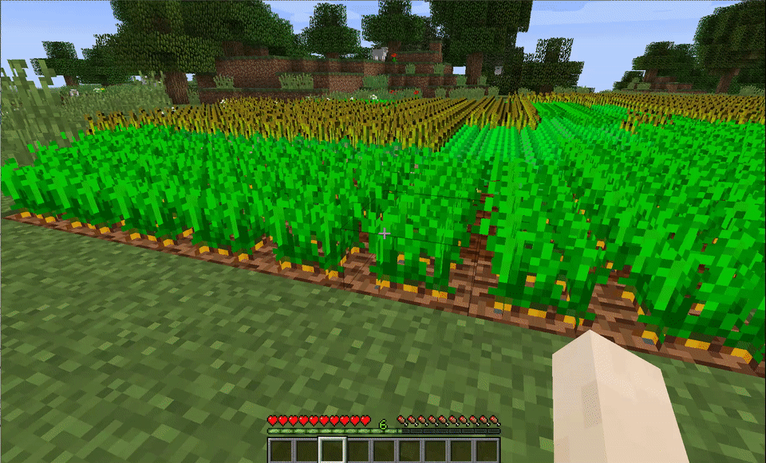
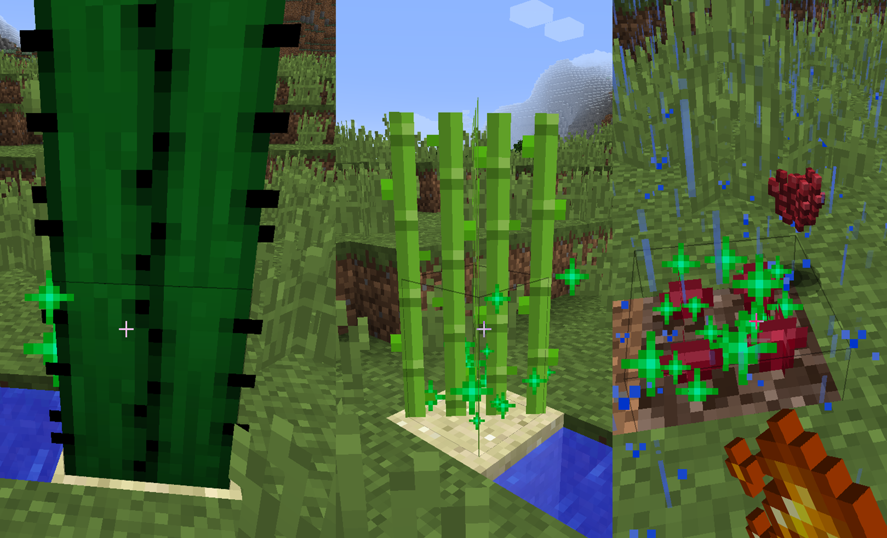
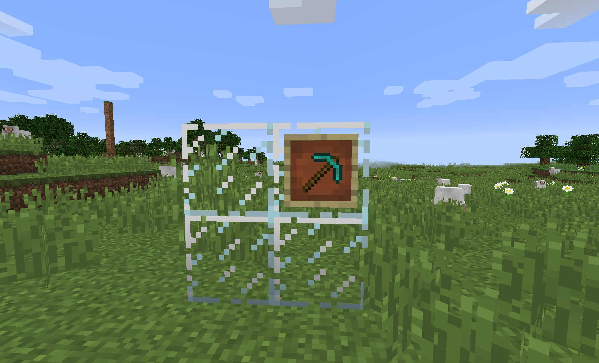
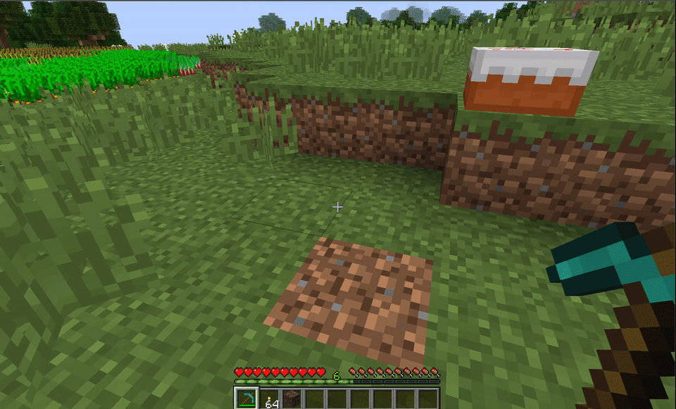
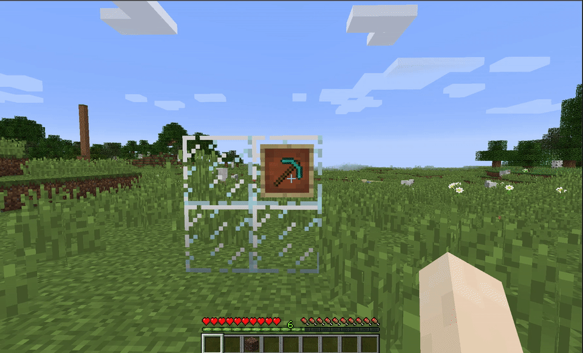

Block Tweaks
Easy Crop Harvesting
Replanting is a thing of the past

1.10.x, 1.12.x, 1.14.xExtra Bonemealing
Bonemeal Interactions Expanded

1.8.x, 1.9.x, 1.10.x, 1.12.x, 1.14.xRe-Usable Cakes
It's not a lie anymore!

Extra Tool Efficiencies
Adding the right tool for more blocks

1.9.x, 1.10.x, 1.12.x, 1.14.xTorch Helper
Cave exploration made easier

1.8.x, 1.9.xGlitching Item Fix
Sans 'Items Gone Wild'

1.8.x, 1.9.xEasy Crop Harvesting

Right-Clicking on crops will do all the work of harvesting for you!!
Right clicking (empty hand or not!) will earn you not only the original drop of the crop, but even some of the bonus seeds that you'd normally get (minus one, of course, to account for what's been re-planted for you). Works with most plantables, assuming they follow similar code to Vanilla.
Torch Helper

Having your hands full is a pain - so is switching around your hotbar.
The Torch Helper tweak allows you to right-click with any generic tool item and place a torch. Special Conditions: Empty Offhand, and mod compatibility works if the item you want placed as a torch has the word torch in its localized name (i.e. what "torch" is in your language").
Glitching Item Fix

Nobody likes glitching items.
When enabled, item frames, their stored items, paintings and records from jukeboxes all go straight to your feet instead of falling out near the original location.